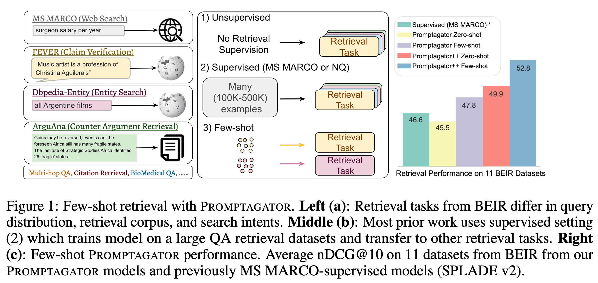
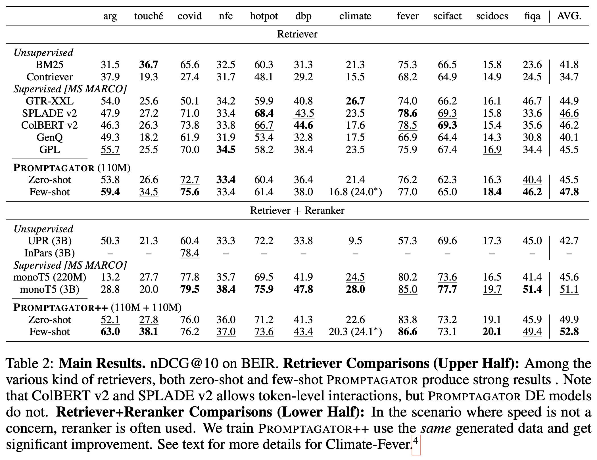
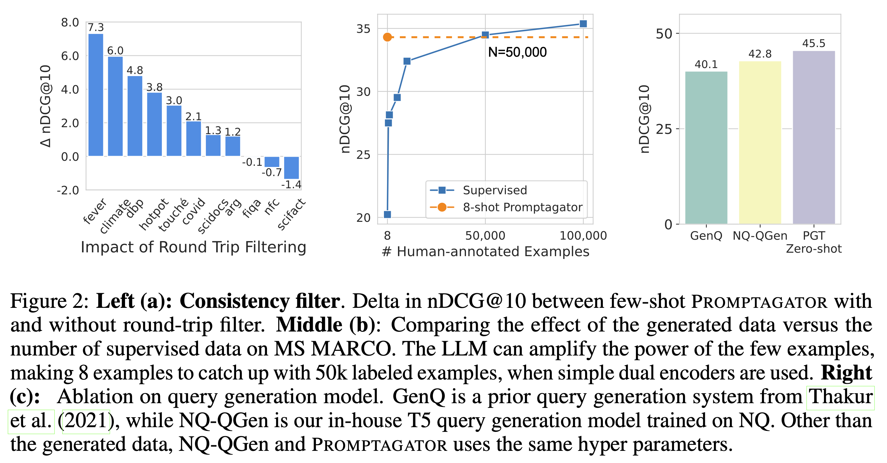
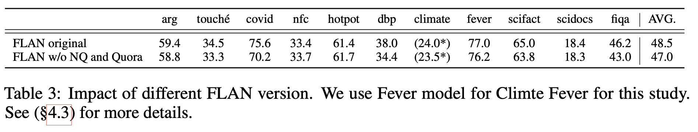
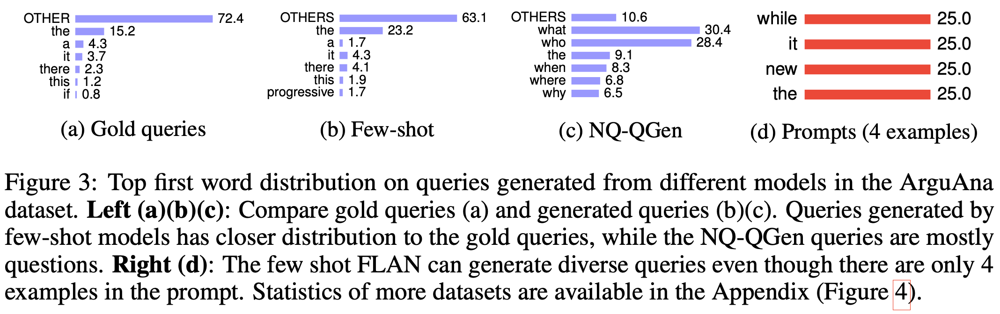

Promptagator 論文解読
論文URL：https://arxiv.org/abs/2209.11755
1 Introduction

BEIRのような異なる種類のデータセットによって構成されるベンチマークがある。特定のデータセットで学習したモデルは他領域への汎化が難しい。その理由は主に2つある。
まず、異なるタスクはそれぞれ検索意図が違う。例えば、図1の左側に示されているように、Dbpedia-Entityはクエリで言及されたエンティティを検索するタスクであり、FEVERは与えられた声明を支持または反証する証拠を検索するタスクである。
また、検索意図が類似していても、データの分布が異なることがある。例えば、HotpotQAのように違う領域の質問もあるし、FiQAのようにファイナンシャル専門の質問もある。
これまでに、情報検索領域でのLLMの活用に関する論文が複数ある。例えば、GPT3のEmbedingをDual encoderモデルに適用する論文がある。ただし、GPT3のEmbeddingの次元数が12ｋとなっており、推論時の計算コストが高い。また、以前紹介したGPT3でQueryを作って、T5のRerankerを学習したInParsもある。一方、その論文はRetrieverをBM25を使っている。
この論文は以下の貢献がある：
- 異なる検索タスクの意図とQueryの分布を分析し、Few-shot Retrieval settingを提案した。
- Promptgatorを提案した。2~8個の例を使えば既往の50万以上の例で学習したモデルより高い精度を達成できている。
2 Few-shot retrieval task
この節でFew-shot retrievalを紹介した。
3 Promptagator
Promptagatorは3つのステップで実現される。
- 各タスクに対して専用なPromptを作成し、LLMでDocumentに関連するQueryを作る
- Retrieverを用いて、生成したQueryと生成元のDocumentを検索できない場合は、それを除外する
- 除外されていないQueryとDocumentのペアでRetrieverを学習させる。
3.1 Prompt-base query generation
LLMはFLANを利用した。Promptの形式としては、HotpotQAを例として説明すると以下になる。
Evidence: passage 1
Vexed question: query 1
...
Evidence: passage k
Vexed question: query k
Evidence: target passage下表のようにタスクごとに違うPromptを設定した。（Promptの中の0と 1の意味が不明）

Promptで使用した例は最大8個にし、例の長さによって調整している。文書が長い場合は、必要に応じて切断している。
各コーパスから最大100万のドキュメントを抽出し、各ドキュメントで8個のQueryを生成している。LLMはFLAN137Bを使った。生成する際に0.7の温度を使った。
3.2 Consistency filtering using only generated data
生成したQueryに対して、生成元がその答案を含む必要がある。今までの研究で、その原則で生成したQueryをフィルタリングすることは重要であることがしめされている。
過去の研究の中で外部の質問応答モデルを用いて実現していたが、この研究では生成したデータで初期のRetrieverを学習されている。各生成したQueryに対して、Retrieverが検索したTopKの中に生成元のドキュメントが含まれていない場合は、そのQueryを除外する。
3.3 Few-shot promptagator retriever
Dural EncoderのRetrieverを利用している。ベースモデルはT5で、それをC4（Common Crawlのweb crawlコーパス）データセットを使って、Contriverが使用したindependent cropping taskでさらに学習させた。（independent cropping taskとは、同じ文書の異なる部分のペアをPositive example、異なる文書のテキストのペアをNegative exampleとして、教師なしでRetrieverを学習する手法）
その後、生成されたQueryとDocumentのペアを使って継続的に学習させる。学習時にBatch内のQueryとDocumentのペアをシャッフルしてNegative exampleとする。また、一定のStep数を学習した後、それを初期のRetrieverとして生成されたQueryのフィルタリングを行う。フィルタリングした後、継続的に学習させる。
また、Promptagator++というRerankerも提案した。学習データがRetrieverと同じだが、モデルはもっと精度が高く、推論時間が長いCross-attention modelを使った。Retrieverから取得した上位の200件のDocumentから31個のDocumentをサンプリングして、Negative exampleとして使っている。
3.4 Zero-shot promptagator retriever
Zero-shotでQueryを生成する場合は以下の形式でPromptを書いた：
f'{d} Read the passage and generate a query.'4 Experiments
4.1 Implementation
Queryを生成する際に温度を0.7にした。
生成したQueryをフィルタリングする際にKを1にした。
Dual Encodersは同じT5-base v1.1 のEncoder(110M)を使っている。Encoderのトップの層を平均し、768次元のEmbeddingへ投影した。
Promptagator++のRerankerもT5-base v1.1 のEncoder(110M)を使っているが、Cross AttentionのEncoderにしている。
Fine-tuningする際にの具体的なBatch sizeとStepsが下表の通り：
| Model type | Dataset size | Batch size | Fine tune steps |
|---|---|---|---|
| Dual encoder | Big(>500k) | 6k | 5k |
| Dual encoder | Small(<=500k) | 128 | 1k |
| Reranker | Big(>500k) | 64 | 20k |
| Reranker | Small(<=500k) | 64 | 5k |
4.2 Main Results

表の前半ではRetrieverの比較が行われている。Zero-shotのPromptagatorはすでに大多数のMS MARCOでFine-tuningした教師ありのRetrieverと同等な精度を出している。Few-shotのPromptagatorはさらに教師ありのRetrieverより高い精度を出している。
後半ではRetriever+Rerankerの組み合わせの比較になる。Retrieverと同じ傾向で、Zero-shotでかなり良い精度を出している。Few-shotになるとさらに更に精度が3%向上し、Sotaになっている。
また、Promptagatorのもう一つ優れている点はモデルのサイズである。他のモデルは大体3Bの大きさだが、Promptagatorはわずか110Mのみである。
4.3 Abalation Study

Queryフィルタリングの効果 Figure2の左図は、Queryを一回フィルタリングした効果をしめしている。大多数のデータセットにとって、Queryフィルタリングが有効だが、逆効果のものも存在する。NFCorpus and SciFactは小さいデータセットなので、フィルタリングで過学習している可能性がある。
また、詳細にフィルタリングされた例をみると、多くケースはQueryは一般化過ぎて多数のドキュメントにマッチングされていること、もしくは単純にQueryが間違っていることがわかる。
生成したQueryで人間のデータを代替することができるか？ Figure2の真ん中の図は、8-shotのPromptagatorは5万件の人間がラベリングしたデータと同じ効果であることを示している。
PromptagatorのQuery生成が効いているか？ Figure2の右図のGenQはBEIR論文の中で提案されたモデル、NQ-QGenはこの論文提案した方法でNQデータセット学習したモデル、NQ-QGenとGenQの違いはQuery生成の部分のみ。NQ-QGenの精度は2.7%高いため、提案したQuery生成の方法が有効だと言える。

FLANの影響 PromptagatorのLLMはFLANを利用している。FLANの学習データの中にNQとQuaroデータが含まれいている。その影響を検証するため､それらを除いたデータセットでFLANを学習し、その結果を比較した(さすがGoogle Research、金ならあるの感じ)。その結果、精度は若干低下したが、以前の研究よりは高い精度を達成している。
4.4 Qualitative Analysis

Queryの最初のWordの分布を調査した。Few-shotが生成したQueryの分布は実際のQueryの分布と同じであることがわかる。
6 Conclution and discussions
この論文はPromptagatorを提案した。一方、未解決の問題はいかのように存在する：
- 効率的に生成したデータを利用する手法が必要。
- PromptとRetrieverの性能との関係。
- LLMの情報を小さいモデルを転移すること。